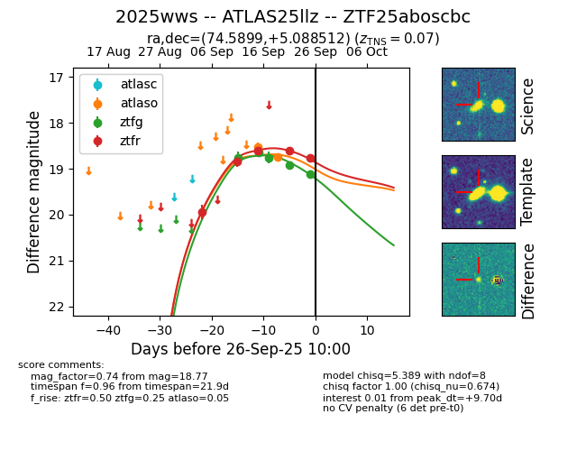
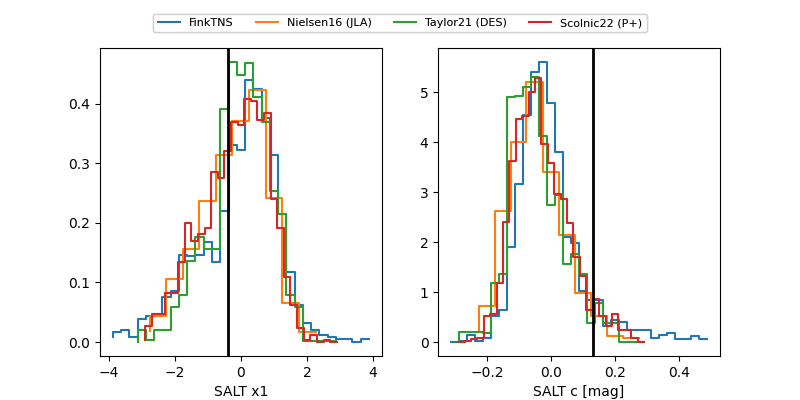

FINK: ZTF25aboscbc
Lasair: ZTF25aboscbc
ALeRCE: ZTF25aboscbc
TNS: 2025wws
YSE: 2025wws
ZTF25aboscbc (ztf,fink)
2025wws (tns,yse)
ATLAS25llz (atlas)
equatorial (ra, dec) = (74.5899,+5.08851)
galactic (l, b) = (194.4012,-22.29727)


last atlaso=18.75, ztfg=19.12, ztfr=18.77
2 atlaso, 5 ztfg, 5 ztfr detections